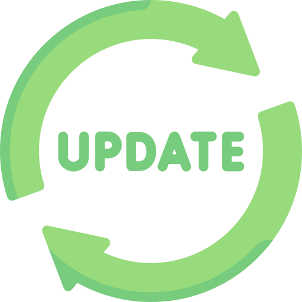

Published By: IT Support Team
Published: 14th May 2026
Over the past few months, the Staff Portal has undergone significant enhancements to better support our staff's daily workflows. We've introduced new tools for communication, organization, and portal management. Here's a review of the latest features now live!
Our new AI chatbot is now available on the homepage and HR sections. It's designed to help you quickly find links, understand school policies, and navigate the portal using natural language. Just click the message icon in the bottom right to start chatting!
You can now manage your daily tasks directly within the portal. The new My Tasks tool (available in the "My Work" dropdown) lets you add, track, and clear tasks. Your list is saved to your browser session for quick access throughout the day.
The "Quick Links" sidebar is now smarter! It dynamically updates based on your role (Staff, Admin, HR, or HoD) to ensure the most relevant resources are always at your fingertips. No more digging through menus for the tools you use most.
Authorized staff can now post news updates directly from the portal! Use the new "Add News" card in the Admin dropdown to create announcements with titles, content, and even image uploads. This helps us keep the whole school informed in real-time.
We've added a Portal Manager tool that allows authorized users to add custom links and cards to the portal's dropdown sections without needing to edit any code. This ensures our digital workspace remains flexible and up-to-date.
We've cleaned up the navigation structure, fixed broken "Back" links across all news archives, and optimized page load speeds. The new "display: contents" layout fix also ensures a clean, gap-free experience in the news grid.
We hope these tools help make your day a little smoother. If you have any suggestions for future features, please reach out via the IT Helpdesk!
Best regards,
The IT Support Team
← Back to Staff Portal